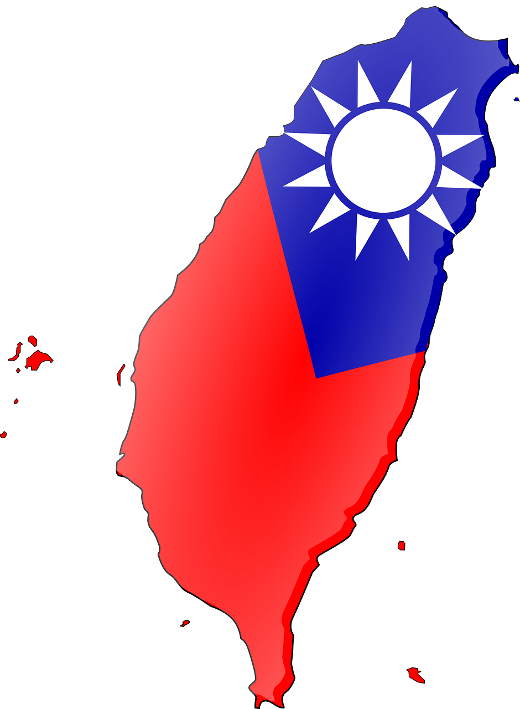

About
(marsjo [user: pixabay], [untitled], pixabay, Public Domain)
Home About Diplomacy People InteractionsWhat this page is about:
What this page is not about:
This page is about spreading information about Taiwan and spreading information on how Taiwan should be treated. In the world, Taiwan is treated as a non-existent place. A place that most countries and organisations don't want to mention. The mission of this page is to bring light to this little island and bring friendships between different countries, organisations, and states with Taiwan. This page is not affiliated wtih the Republic of China (Taiwan) and is not designed to bring political bias. All complaints can be filed at tusharpassi17@gmail.com

(Clker-Free-Vector-Images, Taiwan Flag Republic Of China Free Photo, needpix, Public Domain (CC0)))
I would like to add that this page is not a political website. This page has not been set up to tell if Taiwan is a country or not and to not take sides. All this website will do is inform. Any complaints can be filed at tusharpassi17@gmail.com
This work is licensed under a Creative Commons Attribution 2.0 Generic License